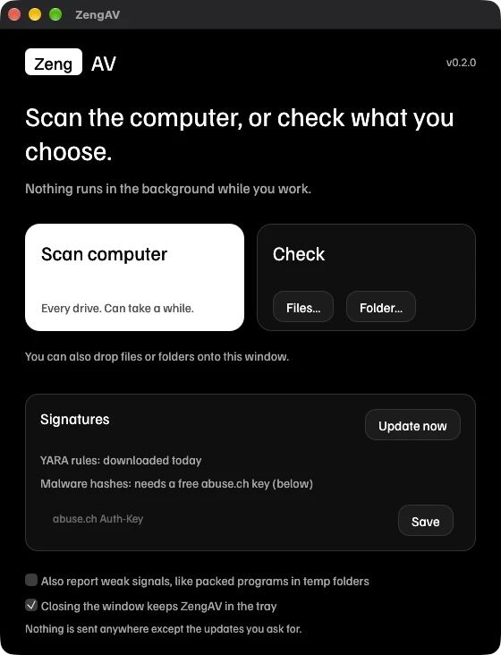
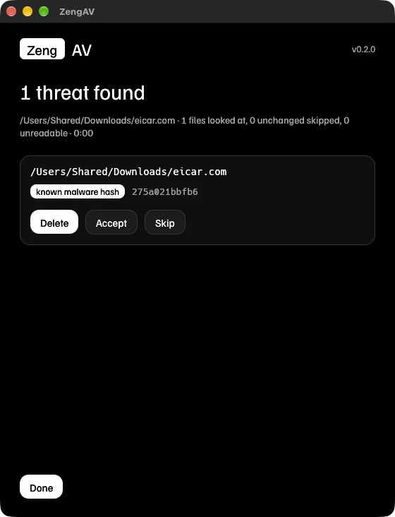

Scan the computer. Check a file. Nothing else.
ZengAV is a small open-source antivirus for macOS, Windows and Linux. It has one window with two jobs, and the same two jobs on the command line. It only looks when you ask it to.

Only the two things you actually do
There is no dashboard, no account and no scheduler. Press a button, read the result, decide what to do with each finding.
scan
Walks every drive on the computer, skipping system pseudo-files that hold nothing to scan.
- --update
- Fetch the newest rules and hashes first.
- --heuristics
- Also report weak signals, like packed programs in temp folders.
- --full
- Ignore the unchanged-file cache and rescan everything.
check
Looks only at what you name: one file, several, or whole folders. Drop them on the window, or use it on a download before you open it.
- --report-only
- Show findings and never ask. Good for scripts.
- --delete
- Delete every finding without asking.
- --verbose
- Print each file as it is scanned.

You decide what happens to each finding
Every detection is listed with its path and the reason it was flagged. Delete removes the file. Accept remembers that exact content so it is never flagged again. Skip leaves it alone. Nothing is deleted unless you press Delete.
The file shown is eicar.com, the industry-standard harmless test file that every antivirus is meant to flag.
Cheapest check first, stop at the first hit
Every file goes through these in order. Most files are cleared by the first step without ever being opened by a rule engine.
Known malware hash
A SHA-256 of the file is looked up in a sorted database that is memory-mapped, so a database of millions of hashes costs almost no RAM.
YARA rules
Executables, scripts, documents and archives are matched against compiled YARA-X rules, which describe malware by its patterns instead of its exact bytes. Your own rules go in a folder and are picked up on the next update.
Heuristics (opt-in)
A weak signal, reported as suspicious and never as proven malware: for example a high-entropy executable sitting in a temp folder. Off unless you turn it on.
Light enough to forget about
ZengAV only works while you are using it.
- Nothing scans in the backgroundThe tray icon is just a menu: open the window, start a scan, check files, quit. Quit it and nothing is left running.
- Half your cores, lowest priorityWorker threads are capped at half the processor, and the scan runs at the lowest CPU priority.
- Files are streamedEach file is read in 64 KB pieces, so a 20 GB disk image costs the same memory as a text file.
- Unchanged files are skippedAfter a clean scan, files with the same size and modified time are not read again until your signatures change.
Measured on one 10-core Mac with an SSD, using the 310 rule files that Update downloads. The scan could not read 864 files because of permissions. Memory is the peak resident size reported by the system. Your times will depend on your disk and how many files you have.
Prefer the terminal?
The command line does the same two jobs with the same engine. It is a separate small program, so servers and scripts never load a window.
The output format is real. The folder and file count are an example.
What it will not do
A small tool should be clear about its edges.
- It does not watch your computer. There is no real-time protection and no kernel driver. It finds what is on disk when you run it.
- It is only as good as its signatures. It will not catch a brand-new threat that nobody has described yet. Treat it as a strong second opinion next to the protection your operating system already provides.
- Malware hashes need a free key. abuse.ch, which publishes the hash list, requires each person to get their own free Auth-Key at auth.abuse.ch. Paste it into the Signatures panel. Without one, ZengAV still uses YARA rules, but skips the hash feed.
- It never deletes on its own. Deleting happens only when you press Delete, or pass
--deleteon the command line. - It sends nothing anywhere. The only network traffic is the update you ask for. There is no telemetry.
Get ZengAV
No installer and no account. Each download contains the app and the command-line program, and each release lists a SHA-256 checksum next to every file.
| macOS | Apple silicon or Intel. Not notarized yet: the first time, right-click ZengAV and choose Open. | Apple silicon Intel |
|---|---|---|
| Windows | 64-bit. Not code-signed, so SmartScreen may warn on first run. | Download |
| Linux | 64-bit. The tray icon needs an indicator-capable desktop. | Download |
Each file has a matching .sha256 on the release page.
# or build it yourself with Rust cargo install --git https://github.com/SirCreativeZHLM/ZengAV # command line only, no window or tray cargo install --git https://github.com/SirCreativeZHLM/ZengAV --no-default-features